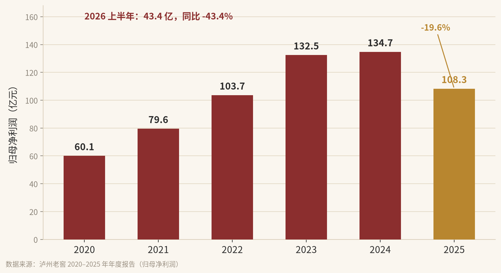

写在前面：这篇文章不荐股，也不保证明天涨。我只是把一个普通投资者，在泸州老窖上的算账过程，原原本本摊开。
69.99 元。
这是我写这篇的时候，泸州老窖的股价。
两年前，我从 120 元一线开始买；一路跌到 68 元，我还在买。
后台被问得最多的一句话是：白酒都塌了，你还敢加？
我不是胆子大。我只是把账，一笔一笔算过。

▲ 泸州老窖归母净利润（亿元）。十年翻倍，2025 年掉头。数据来源：公司历年年报
01 结论先说
我不推荐任何人买股票，也不保证它明天就涨。我只说我现在怎么想、怎么算、为什么越跌越买。三句话：
一、护城河是时间。泸州老窖最值钱的资产，是别人花多少钱都买不走的四百多年窖池。
二、需求没有死。三公消费和“年轻人不喝”，是两把看着吓人、其实插在周期上的刀。
三、价格给够了安全垫。2.4 倍 PB、6% 以上的股息，这个位置，我算得出下限。
我从 120 买到 68，不是补仓摊低成本，是每跌一次，账越算越明白。
02 护城河是时间
很多人聊白酒的护城河，爱讲品牌、讲渠道、讲广告。但浓香型白酒真正的底牌，是窖池。
“1573 国宝窖池群”，从公元 1573 年连续酿造到今天，四百五十多年，一天没停过。
1619
口百年以上窖池
91.3%
百年以上国宝窖池
占全行业的比例
450+
年，连续酿造
从未间断
数据来源：泸州老窖官网、公司公开资料
这些数字的分量在哪？浓香酒的酿造里，窖池越老，窖泥里的微生物群落越稳定、越丰富，出的酒越醇。而一套成熟的窖池生态，要靠几十上百年的持续投粮和养护，才养得出来。
换个说法：新窖池出的酒，和老窖池不是一个东西。这不是配方问题，是时间问题。
钱可以盖一座一模一样的厂房，砸出一模一样的广告，但买不走四百五十年的时间。
全国百年以上的国宝窖池，九成以上在泸州老窖手里。这个壁垒，已经不只是护城河，是护城墙。
竞争里最贵的一种壁垒，是时间。别人不是不想抄，是抄不了。
03 被误读的“不喝了”
两个问题绕不开。
第一，三公消费。2012 年前后那轮限制，行业确实难受过。结果呢？白酒没有消失，它完成了从政务到商务、再到大众消费的切换。需求的结构变了，需求本身没消失。
第二，年轻人。这话我每年都听——“这代人不喝白酒了”。我的看法可能不讨喜：很多年轻人不是不爱喝，是还没到那个年纪、那个收入、那个场合。
25 岁喝精酿和奶茶，
35 岁陪客户喝国窖 1573。
口味是被生活改造的。白酒也不只是普通饮料，它同时是酒精、是人情、是面子、是酒桌上的社交货币。三重属性叠在一起，它的需求韧性，远超一般消费品。
当然，我不装看不见数据。2025 年全国白酒产量 354.8 万千升，同比 -12.1%；行业规模回落到 6500 亿左右，降幅超两成；渠道平均存货周转天数约 900 天，两年多才能出清。这是真的冷。
把一轮周期性调整，误读成永久性消亡，是这一轮市场最大的认知差。
冷的是量和库存，不是人心里的那杯酒。
04 我只算三笔账
股价是情绪给的，价值是生意给的。我只信后者。
泸州老窖 · 估值快照（2026 年 10 月）
| 股价 | 约 70 元 |
| 总市值 | 约 1030 亿 |
| 2024 归母净利润 | 134.7 亿 |
| 2025 归母净利润 | 108.3 亿 |
| 市净率 PB | 约 2.4 倍 |
| 2025 年度分红 | 65 亿（10 派 44.17） |
| 股息率 | 6% 以上 |
第一笔，分红账。2025 年度分红 65 亿，按 1030 亿市值算，股息率 6.3%，这还没算中期分红。行业再冷，账上的现金和分红能力还在。这笔钱是现金，不是故事。
第二笔，利润账。2.4 倍 PB 买的是什么？是每年 25% 到 30% 的 ROE。等于用 2.4 倍的价格，买一台年化赚三成的机器。
我再保守地算一遍：就算把它的盈利能力打到只剩 8 到 10 个点，2.4 倍 PB 对应的盈利回报也还有 4 到 5 个点。这是安全垫的下沿，不是天花板。这里说的“杠杆”，是生意本身的 ROE 被 PB 放大了一次，不是让你去融资加杠杆，这点必须说清楚。
第三笔，修复账。现在的利润是周期底部，2026 上半年净利同比 -43%，被压得很狠。等行业出清，利润回到 120 到 130 亿的常态，估值再回到合理位置，向上的弹性很大。但我不把它算进回报，只当白送的期权。
三笔账合起来：分红 6% 以上，加上长期温和的利润增长我保守按 4 到 5% 算，年化 11% 往上。说白了就三句——用便宜的价格，买好东西，靠分红和内生增长慢慢赚钱，不赌估值回归。
我从不指望它涨回高估值。我只算一件事：就算它一直这么便宜，我每年能不能稳稳拿到 11%。
05 前提与风险
任何判断都有前提。不把前提讲清楚的观点，都是耍流氓。我的话要成立，得先满足四条：
① 这是周期调整，不是需求永久消失；
② 国窖 1573 的价格体系和品牌力不被颠覆；
③ 分红政策延续，现金流撑得住、公司愿意分；
④ 没有更长期、更严厉的限制性政策。
上面任何一条被证伪，我这篇的判断就得重做。
风险我也直说：去库存还没结束，短期未必见底；我买在 68，不代表 68 就是底，我不知道底在哪，也不会假装知道；分红也可能缩水，6% 是我按 2025 年水平的假设，不是承诺。
所以别抄我的作业。你要抄的，是我算账的方法，不是我的价格。
06 价值底部，不要恐惧
市场恐慌的时候，价格由情绪定；愿意算账的人，价格由价值定。
我的做法很笨：分批买，不一次梭哈；越跌越买，但只用闲钱，仓位有上限，绝不动生活费和借钱的钱。长钱，才配得上这种周期底部。
把时间拉长到十年、二十年，今天这点波动，连个水花都算不上。按现在的分红水平，就算股价十年不涨，光分红也能拿回六成本金，剩下的股权，相当于慢慢白送。
好东西一定有价值。价格可以暂时离开价值，但不能长期无视价值。
底部不是用来“抄”的，
是用来“拿”的。
恐惧的时候，把账算细一点，手就不抖了。
我不荐股，也不劝谁上车。我只是把我怎么想、怎么算、为什么在 68 元还伸手，原原本本摊开给你看。
你的钱，你负责。我的钱，我负责。
声明：本文为个人投资思考记录，作者持有泸州老窖股票，观点可能受持仓影响，不构成任何投资建议。文中数据来自公司年报及公开报道，可能存在滞后或误差。股市有风险，投资需谨慎。